|
Sequia basaltoUnderstanding the drought phenomena in Uruguay and developing a participatory methodology to improve the resilience of livestock farmers of the Basalt regionParticipants:
Danilo Bartaburu - Instituto Plan Agropecuario, Salto, Uruguay. dbartaburu@planagropecurio.org.uy Francisco Dieguez - Instituto Plan Agropecuario, Montevideo, Uruguay. fdieguez@planagropecuario.org.uy Jorge Corral - Facultad de
IngenierÃa, Montevideo, Uruguay. jcorral@adinet.com.uy
Hermes Morales - Instituto Plan
Agropecuario, Salto, Uruguay. paisanohermes@hotmail.com
Emilio Duarte - Instituto Plan
Agropecuario, Salto, Uruguay. eduarte@planagropecuario.org.uy
Esteban Montes - Instituto Plan
Agropecuario, Salto, Uruguay. emontes@planagropecuario.org.uy
Marcelo Pereira - Instituto Plan
Agropecuario, Salto, Uruguay. pmsacra@adinet.com.uy
Pedro De Hegedus - Faculdad de AgronomÃa, Udelar, Montevideo, Uruguay. phegedus@adinet.com.uy
Pierre Bommel - CIRAD and PUC
University of Rio de Janeiro, France and Brasil. bommel@cirad.fr
The Sequia project is funded by INIA, since May 2009. Drought is one of the major events that causes negative effects on livestock breeders in the basalt region. Most livestock farms in the region are settled on basaltic shallow soils. These soils have very limited capacity to store water in their profile and are more sensitive to drought. The severity and frequency of the droughts has jeopardized the sustainability of ranches. In the late 1990s, livestock breeders experienced severe droughts and millions of animals died or had to be slaughtered prematurely. This led to a weakened beef production sector causing numerous bankruptcies. Additionally, the drought events may occur more frequently in the future as a result of climate change. To evaluate the efficiency of different management strategies, we built an ABM to simulate the evolution of farmers using different drought strategies. The purpose of the ABM was to build prospective scenarios under the assumption that future conditions (climate, prices) will be similar to previous ones during the 2000-2009 decade. Model purposeThe simulation model is designed to explore the impact of different strategies on the trajectory of livestock farms, especially taking into account the impact of droughts. The first model is a standard ABM for which no interactive simulation was planned. In that version, agents are strong simplifications of farmers’ behaviors. Two kinds of producers were considered depending on their corresponding drought strategies:
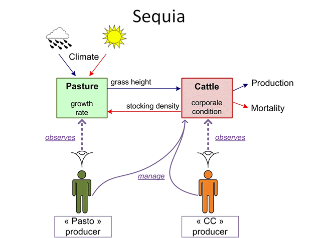 Whatever his strategy, a producer owns a 500 ha farm composed of
one single pasture (of a non-defined spatial dimension). The grass
grows according to the logistic equation which parameters change
according to seasonal and climatic conditions. Two herds are
grassing on the farm: sheep that are not affected by drought (they
are able to survive even in extreme conditions) and for which the
dynamics is very simple, and cattle, which are impacted by grass
height and which lifecycle is more finely modeled. The model
consists of three submodels:
Model descriptionModel structureThe following class diagram presents the main classes of the model: 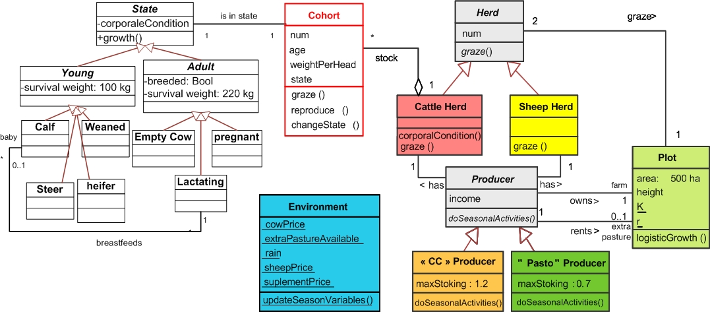 Whatever his strategy ("CC" or "Pasto"), a producer owns a 500 ha
farm composed of one single pasture (of a non-defined spatial
dimension). The grass grows according to the logistic equation
which parameters change according to seasonal and climatic
conditions. Two herds are grassing on the farm: sheep that are not
affected by drought (they are able to survive even in extreme
conditions) and for which the dynamics is very simple, and cattle,
which are impacted by grass height and which lifecycle is more
finely modeled: the cattle herd is made of cohorts of cows (a
group of individuals born at the same time period). When getting
older, all the animals of a cohort will growth and change their
state at the same time (calves, young adults then reproductive
adults). As they share the same characteristics, we assume that
they are similarly affected by external events such as droughts.
In other words, the cohort agent is a cow plus a specific
attribute: number of animals of this cohort. The sheep herd class
is modeled as a simple entity without cohort, but it has got an
attribute (num, inherited by Herd class) and even if its
dynamics is very simple, it grazes. Thus it has an effect on the
grass height: each sheep eats 2% of its weight per day. So the
sheep herd is a competitor to the cattle for grazing. Time stepAs the farmers have distinct seasonal activities, the time-step for the simulations corresponds to one season. But a one-day sub-step is needed to more accurately represent the interactions between grass growth and herds grazing (cattle and sheep). The task scheduling order (i.e. order in which the behaviors of agents and resources are called upon at every time step) is shown on following sequence diagram: 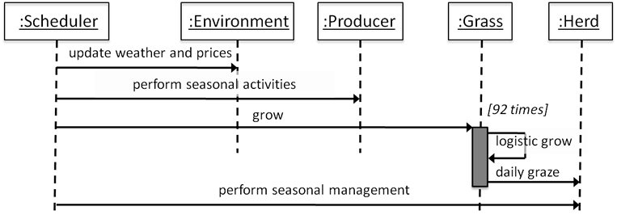 By testing alternative strategies with the executable editor, the participants identified some model biases: they realized that in drought conditions, the agents always reacted too late. For instance, in case of poor health of the herd or in case of lack of grass, the decision to feed the herd with supplement did not apparently prevent it from collapsing. The participants understood that during crises, the agents had to act more frequently than only once per season as stated by the first model version. The consequence being that we intend to correct the model by repeating the seasonal activities of the agents every week rather than only once a season: 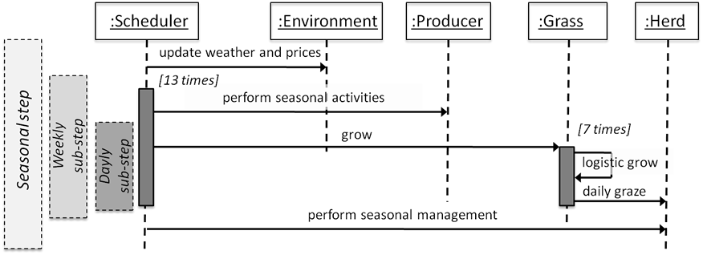
The states of a cohortThe following state-transition shows the life cycle of a cohort of wild cattle with sub-states. 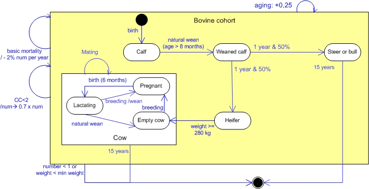 From this wild cattle model, 2 state-transition diagrams are derived, showing the management events of the producers. These human events are shown as red transitions. State-transition diagram of the "CC" producer, adapted from previous diagram: 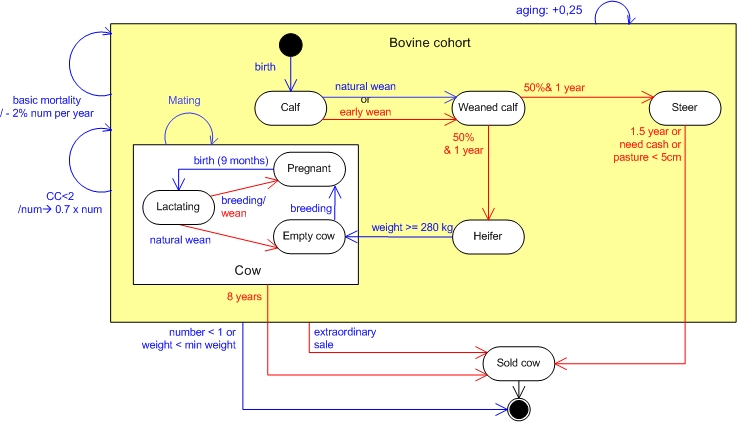 State-transition diagram of the "Pasto" producer: 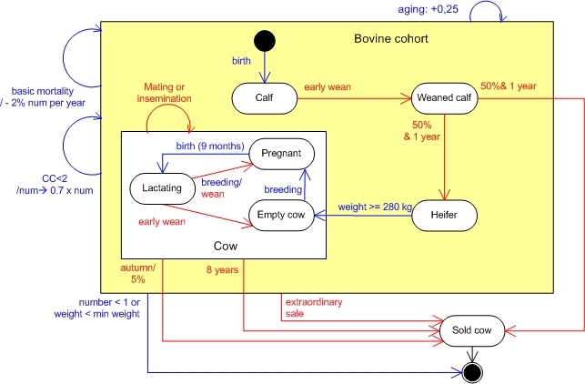 Producer activitiesIn the first version of the model, the activities have been described as UML activity diagram: one diagram per season and per agents strategy. The following diagram presents the spring activities of a “Pasto” Producer (green) and a “CC” Producer (orange). These activities consist mainly in managing the farm and the herds. Even if, for a given season, the strategies are roughly similar, differences exist on the decision points for each one: while the “CC” producer surveys the physical condition of his cattle to guide his managing choices, the “Pasto” producer chooses his activities according to the grass height and by trying to stay under a low stock threshold. The following animated figure describes the behavior of both producers (“Pasto” Producer: green and a “CC” Producer: orange) during the spring season: even if they behave in the same way, the guards (squared brackets) of the main decision points concern the priority of each agent. 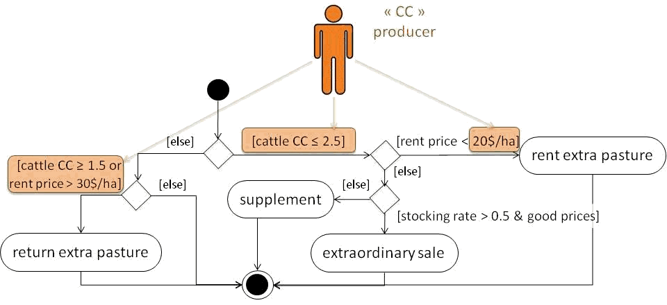 Some resultsThe following simulation curves show the evolution of the pasture without grazing cattle, according to seasons and climate: 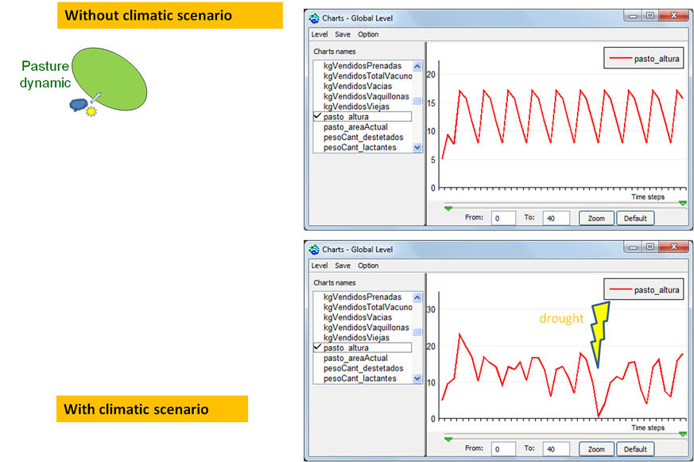 Result Pasture and wild cattle: 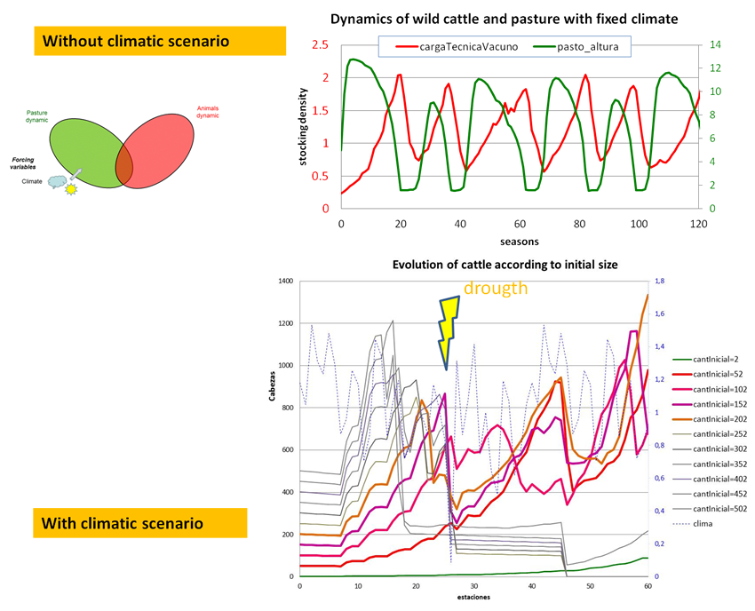 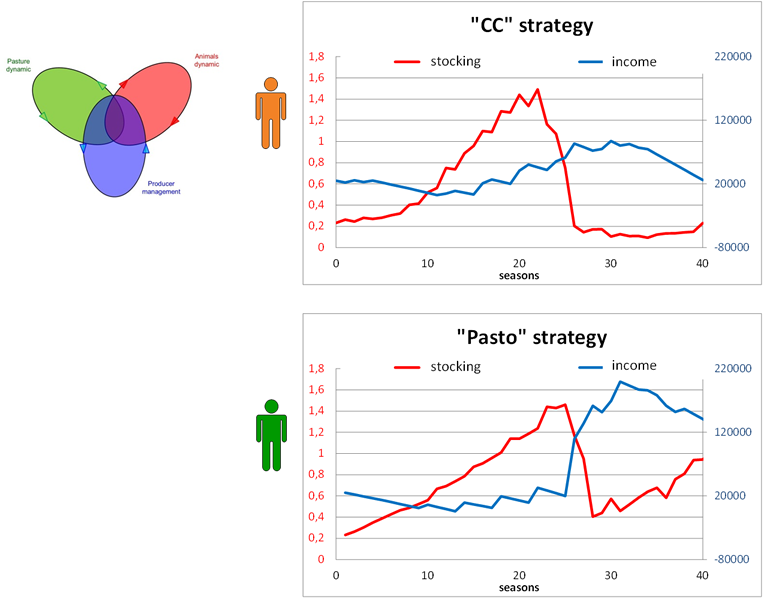 The interactive modelTo facilitate the collective design of the model, it was necessary to immediately assess the consequences of changes. For that purpose, we created a new tool that enables the drawing of simple activity diagrams and to execute them without any need for translation into code. Indeed, this editor allows the creation of new activity diagrams (or re-opening formers) that are interpreted “on the fly” by Cormas. Then it is possible to modify the simulator while it is running, without stopping or restarting the simulation. For simplicity sake and user friendliness, the elements available on the diagram editor are restricted to initial and final nodes, decision points, simple activity nodes (without parameters nor ability to handle an activity output) and transitions (Fig. 6). The decision point has also limitations in the sense that only two transitions come out of it, indicating the fulfillment (true) or the negative answer (false) of a test. The followinf figure presents the executable Activity diagram editor displaying the spring strategy for a collectively designed Producer. Note that this diagram is equivalent to the one presented in the previous figure. 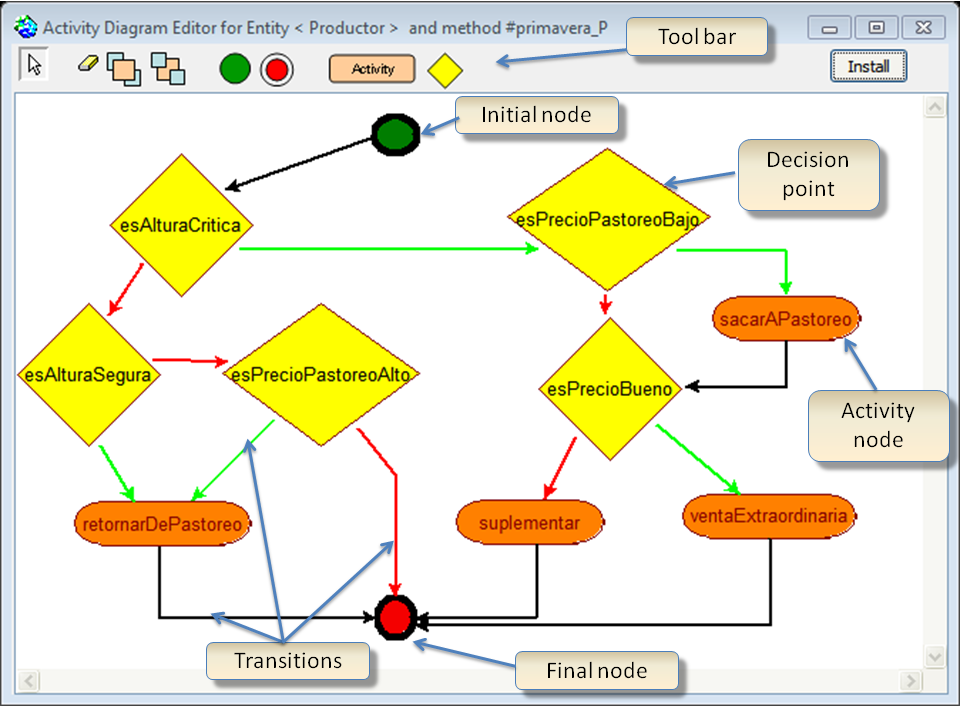 By selecting an activity node or a decision point on the tool bar, the user can add a new element on the diagram. Thereafter, he can choose the operation to be performed by this element. Each element proposes a drop-down menu to display an activity setter from which the user may choose the method that will be associated with the selected node
The activity setter displays a list of methods belonging to the target class (i.e. Producer). This list is set up automatically by Cormas that inspects all the simple methods (without argument) defined within the class and its super-classes. By clicking on a name, the purpose of the associated method is displayed. It is also possible inspect the method’s code by right clicking on it. The design is incremental: saving a new diagram generates a new method of the agent that is immediately available and can be called in turn (i.e. future activity setter will display this new method name). A right-click on an activity or a decision point opens either a code editor targeting the selected operation, or another diagram editor displaying the previously saved activities. Therefore, the user can draw a transition from the given node to another. When starting from a decision point, he will create two transitions: one for which the answer of the test is true (green) and one for false (red). When saving the new diagram, Cormas checks if the graph is coherent, then it generates two operations in the target class: one to store the diagram and one to execute it. Thus, from basic operations already defined by the modeler, anyone may generate new upper level behavior without any programming skills. To edit the diagrams or choose which activities will be used during the simulation, the user selects the names of the methods that will be implemented at each station:
|
|